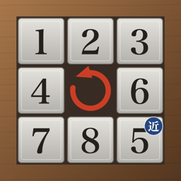

まわり道が分かる15パズル
札を1枚動かすたびに、最短に近づいたか、まわり道かを見せるスライドパズルです。
空いたマスのとなりの札をすべらせて、1 から順に並べる 15パズル（4×4）と 8パズル（3×3）です。いまの盤から最短であと何手かを、いつも計算して出します。
- 1手ごとに、近づいたか・まわり道かが分かります。最短に近づいた手には藍の「近」、まわり道の手には朱の「回」の印を札に押し、「まわり道 あと 25 手（最短は 3 を左へ）」と出します
- まわり道をした手を、あとから見られます。そろえたら、まわり道をした手を順に並べます。押すと、その時の盤（動かした札と、最短の札）を見せ、「この手の前から打ち直す」で、そこから続けられます
- 4×4 も本当の最短です。最短の手数は、端末の中で計算して出します
- 大きさ（4×4・3×3）とむずかしさ（やさしい・ふつう・むずかしい。最短の手数で分けます）。面は限りなく続き、同じ面はいつも同じ盤です。毎日の1面もあります
- ヒント（最短の道の次の1手）・最短の道を見せる・1手もどすは何回でも。途中でやめても続きから遊べます
- 記録：大きさとむずかしさごとの解いた数・ぴったり（まわり道 0）の数・毎日の1面のカレンダー
- 登録・課金・通知はありません。記録はこの端末の中だけに保存します。画面のいちばん下に小さな広告が出ます（面の前後に広告をはさまず、画面いっぱいの広告・動画の広告は出しません）